目标架构与当前实现
目标链路：真实网页 -> Chrome 原生 Side Panel -> B SidePanel Shell -> Background runtime proxy -> Runtime API -> D Adapter -> A Page Perception / C Mindmap -> B Debug / Chat / Mermaid / Source Fallback。
当前实现：验收脚本在真实浏览器中打开原生右侧 Side Panel，复用 Runtime 主链路完成读取、提交、摘要、问答、Mindmap，并对低信号页展示 degraded 结果。
False-Green Audit
| 检查项 | 结果 | 证据 |
|---|---|---|
| native_ux_report_passed | PASS | native-sidepanel-ux/report.json |
| no_structured_blockers | PASS | report.blockers |
| required_page_count | PASS | pagesPassed=5, pagesRequired=5 |
| chinese_complex_coverage | PASS | includesChineseComplexPage=true |
| low_signal_degraded_or_failed | PASS | lowSignalOutcome!=pass |
| screenshot_metadata_complete | PASS | 27 screenshots, missing=0, invalid=0 |
| production_build_no_e2e_bridge | PASS | 84 production files checked |
阶段边界
- 可以声明：原生 Chrome Side Panel 体验稳定化通过自动化验收。
- 不得声明：完整 V1 complete、完整 V1.2 complete、A-V1.2 100-page production gate complete。
- 未引入：RAG、长期记忆、多 Agent、浏览器自动操作、语音、桌宠、PPT、深度研究。
1. article
URL: http://127.0.0.1:54343/article.html
结果: 通过
自动化模式: bridge_native_sidepanel

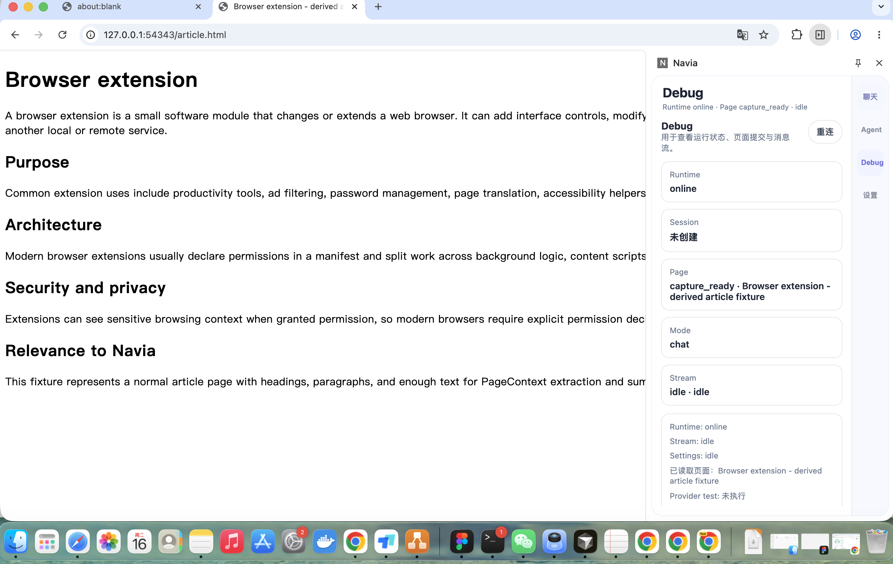
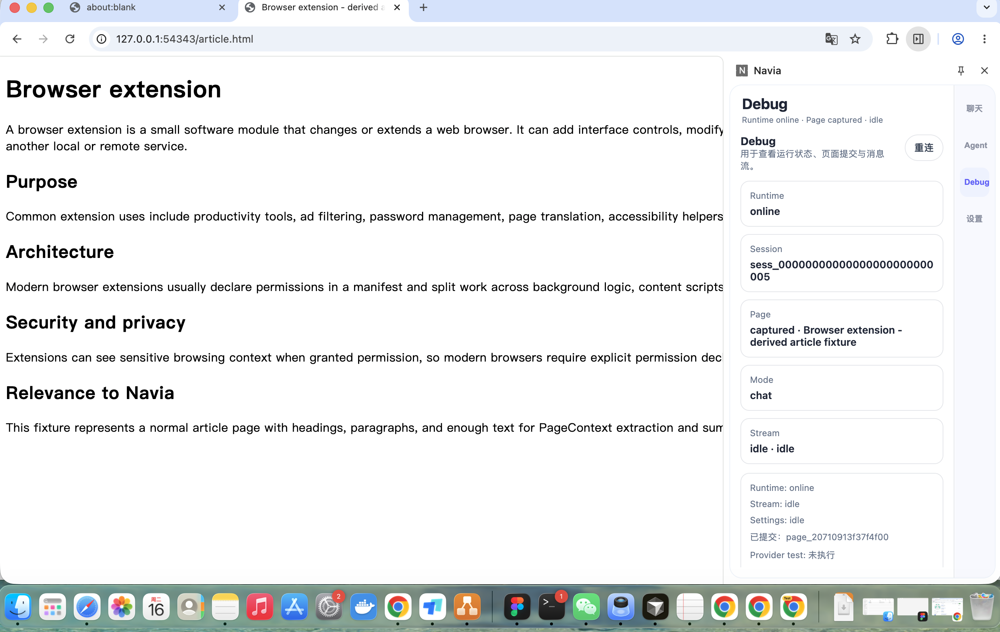


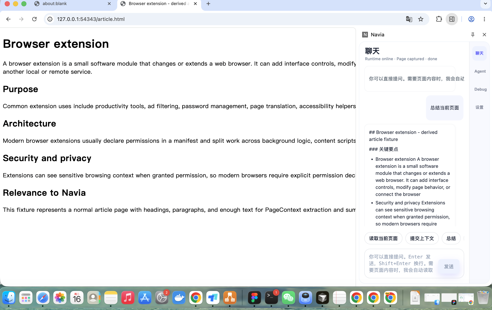
2. technical_doc
URL: http://127.0.0.1:54343/docs.html
结果: 通过
自动化模式: bridge_native_sidepanel

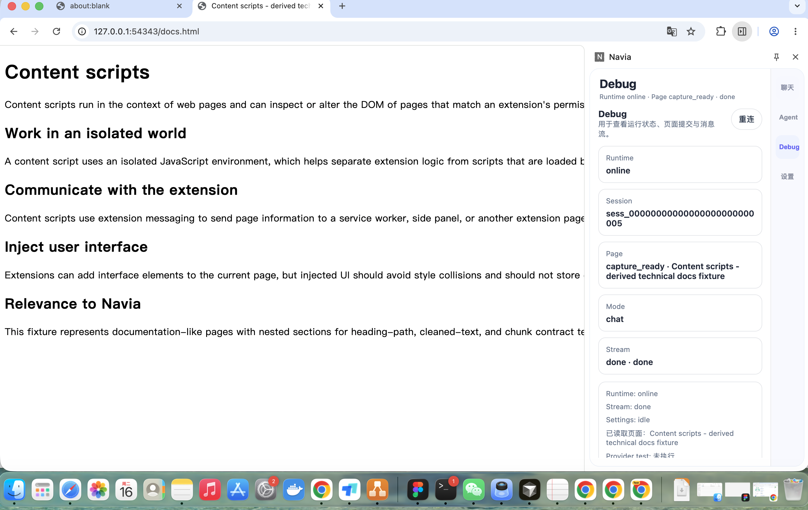
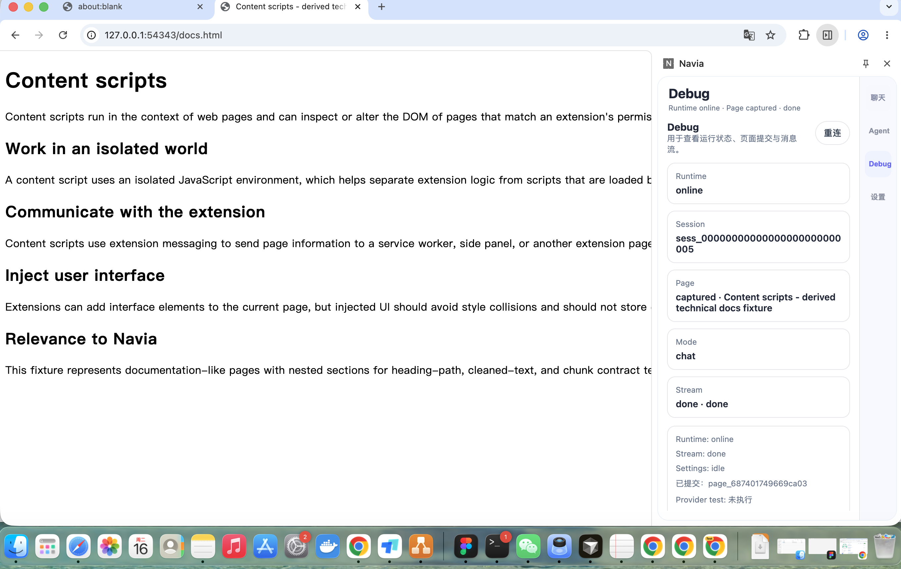

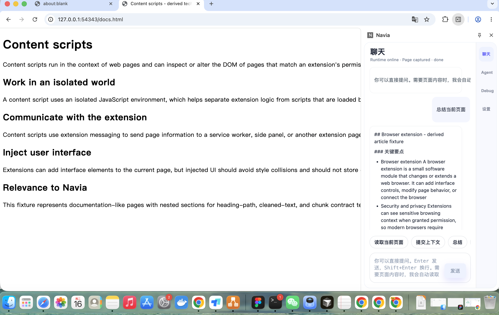

3. readme
URL: http://127.0.0.1:54343/github_readme.html
结果: 通过
自动化模式: bridge_native_sidepanel

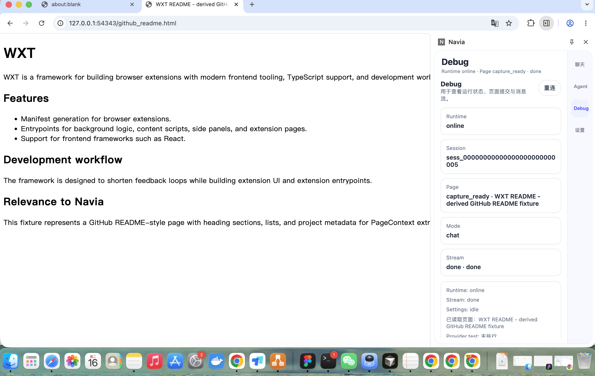
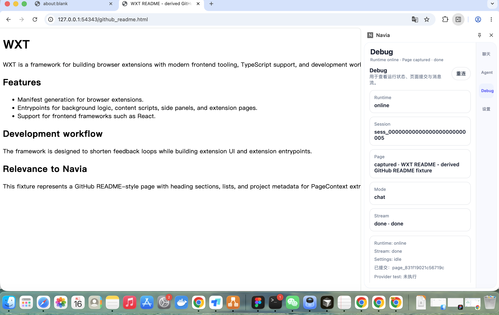


4. chinese_complex · 中文复杂页
URL: http://127.0.0.1:54343/zh_python_modules.html
结果: 通过
自动化模式: bridge_native_sidepanel

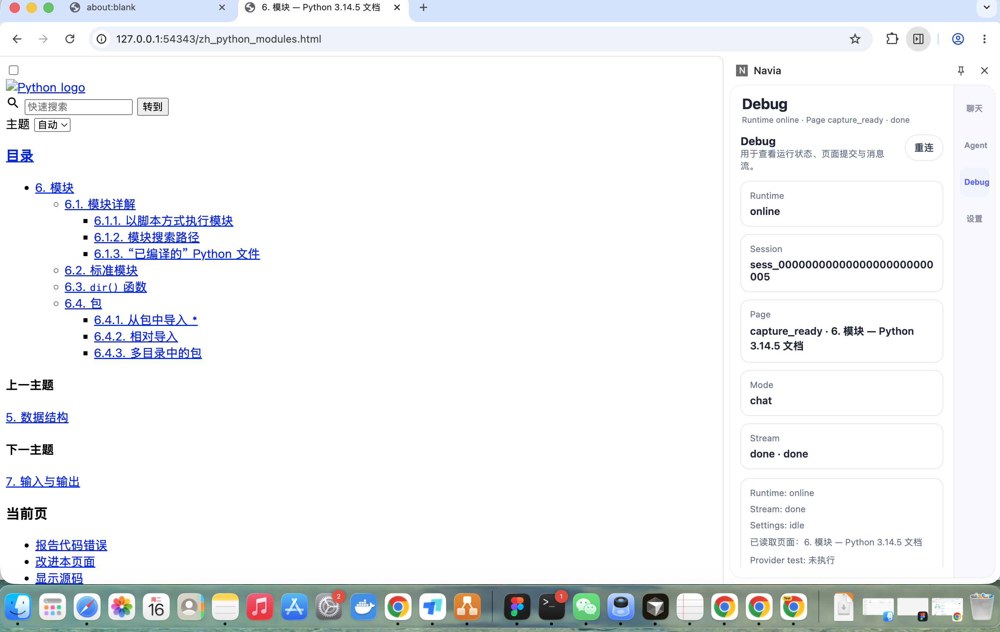
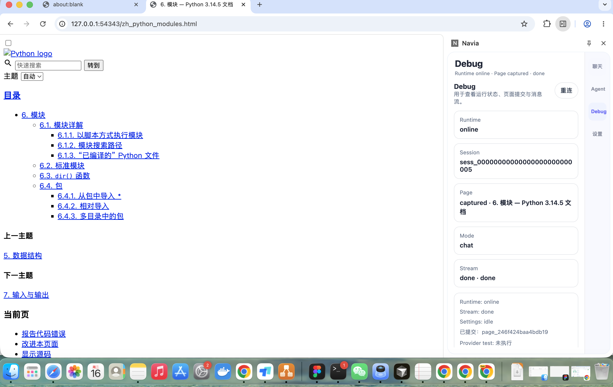

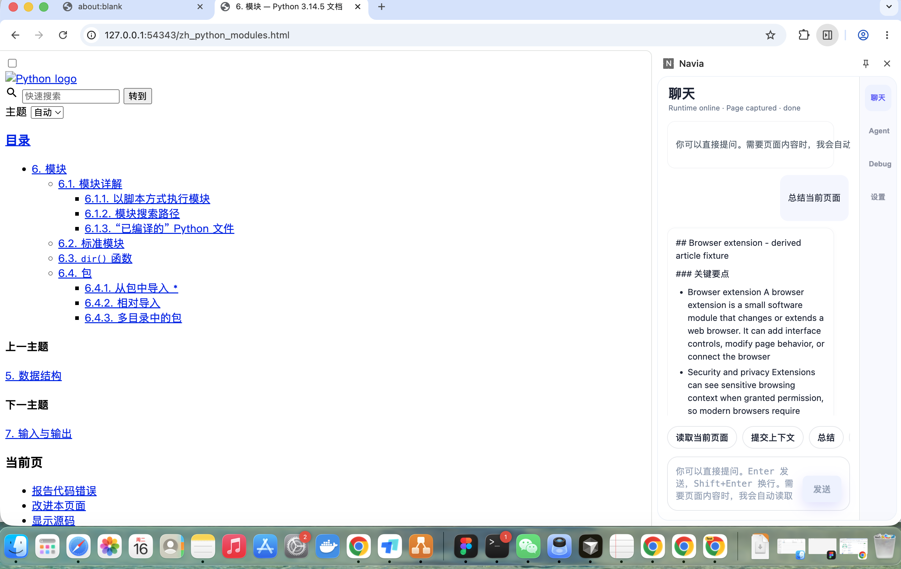
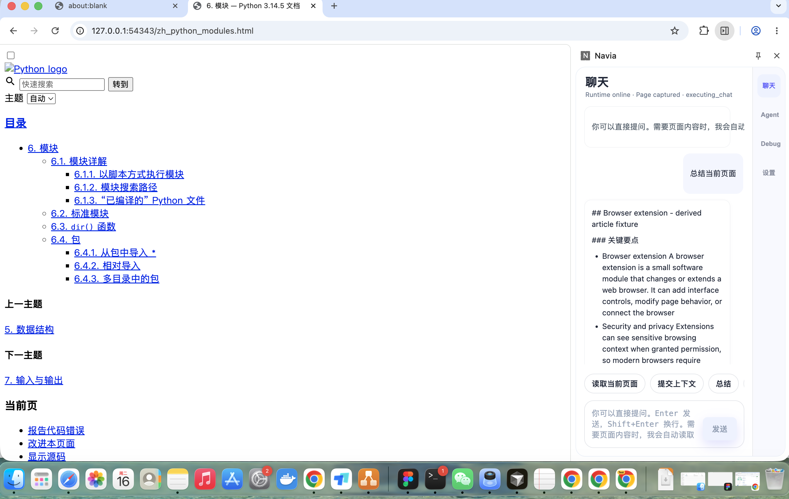
5. low_signal_or_paywall_like · 低信号页
URL: http://127.0.0.1:54343/low_example_domain.html
结果: 通过 · lowSignalOutcome=degraded
自动化模式: bridge_native_sidepanel

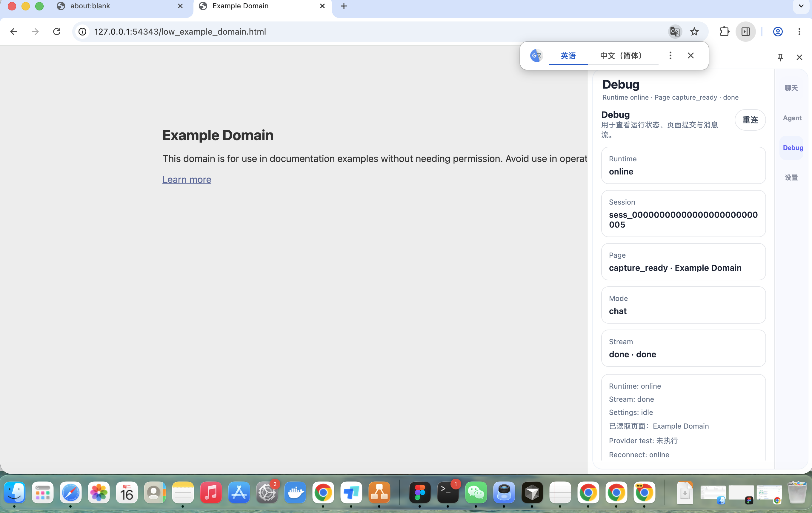
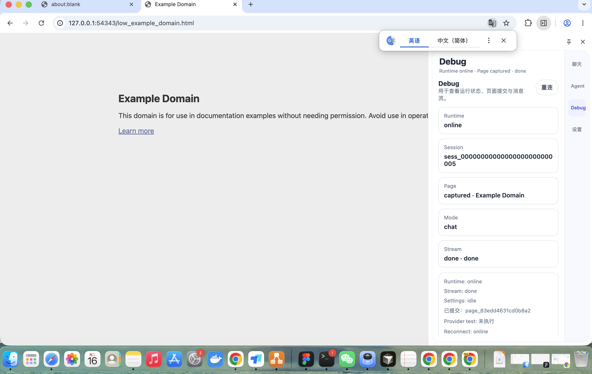